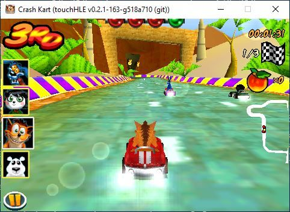
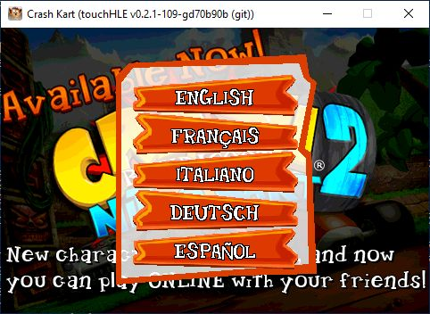
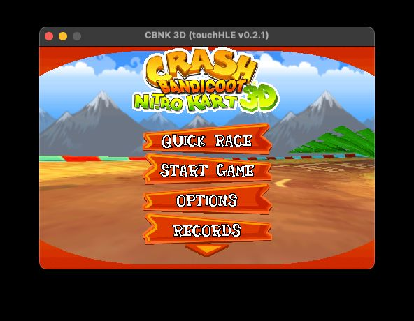
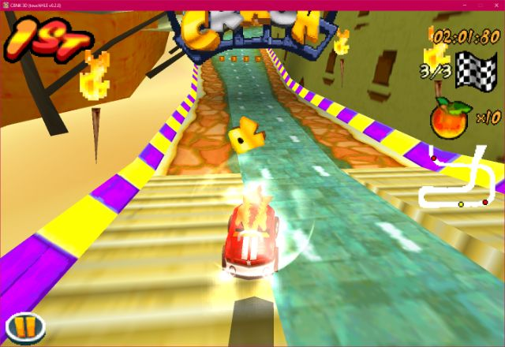

| App name | Crash Bandicoot Nitro Kart 3D |
|---|---|
| Release year | 2008 |
| Developer/Publisher | Polarbit / Vivendi Games Mobile |
| First reported | |
| First reported by | @hikari-no-yume |
| Version number | Display name | Bundle identifier | Minimum iOS version | Best rating | Last updated | First reported by | |
|---|---|---|---|---|---|---|---|
| 1.0 (v.0.7.5) | CBNK 3D | com.vgmobile.cnk2 | (not specified) | ⭐️⭐️⭐️⭐️ | @hikari-no-yume | ||
| 1.7.7 (1.0.1) | Crash Kart | com.vgmobile.cnk2 | 2.2.1 | ⭐️⭐️⭐️⭐️ | @GamingDucking |
| Version number | touchHLE version | Operating system | GPU | Scale hack supported? | Rating | Reported | Reported by | Remarks | Screenshot |
|---|---|---|---|---|---|---|---|---|---|
| 1.7.7 (1.0.1) | v0.2.1-163-g518a710 | Windows 10 | Intel Graphics 520 | Couldn't test | ⭐️⭐️⭐️⭐️ | @GamingDucking | The app now goes ingame (and works after testing it with my phone). | View | |
| 1.7.7 (1.0.1) | v0.2.1-109-gd70b90b | Windows 10 | Intel Graphics 520 | Didn't test | ⭐️⭐️ | @GamingDucking | Crashes at "Object 0x3753ff20 (class "MPMoviePlayerController", 0x374f63e0) does not respond to selector "setBackgroundColor:"!" after i pressed the english button. | View | |
| 1.0 (v.0.7.5) | v0.2.1 | macOS | M1 integrated GPU | No (broken) | ⭐️⭐️⭐️⭐️ | @kendoodoo | View | ||
| 1.7.7 (1.0.1) | v0.2.0-109-geccce19 | Windows 10 | Intel Graphics 520 | Didn't test | ⭐️ | @GamingDucking | Crashes at "Call to unimplemented function _sysctlbyname" | ||
| 1.0 (v.0.7.5) | v0.2.0 | Windows 10 22H2 | NVIDIA GTX 1070 | Yes | ⭐️⭐️⭐️⭐️ | @hikari-no-yume | The opening cutscene video is skipped. | View |
| Rating | Description |
|---|---|
| ⭐️ | Completely broken: app crashes immediately without any user interaction. |
| ⭐️⭐️ | Only (part of) the main menu, intro or similar is working. |
| ⭐️⭐️⭐️ | Some of the main content of the app works, but with major issues. |
| ⭐️⭐️⭐️⭐️ | The main content of the app works (e.g. entire game is playable) with only small issues. |
| ⭐️⭐️⭐️⭐️⭐️ | Everything works. The app is fully usable. |



